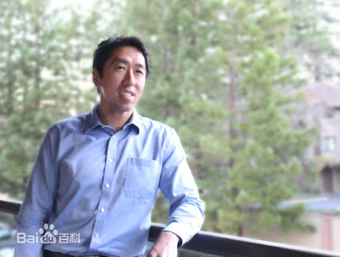
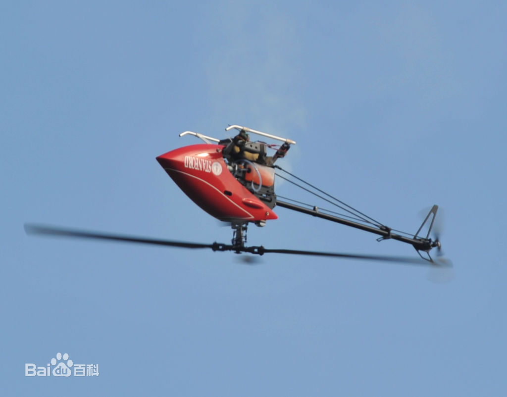
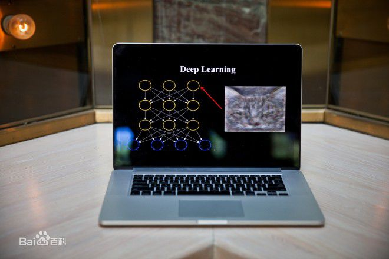
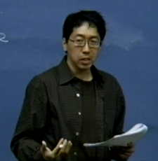

吴恩达
吴恩达（1976-，英文名：Andrew Ng），华裔美国人，是斯坦福大学计算机科学系和电子工程系副教授，人工智能实验室主任。吴恩达是人工智能和机器学习领域国际上最权威的学者之一。吴恩达也是在线教育平台Coursera的联合创始人（with Daphne Koller）。
2014年5月16日，吴恩达加入百度，担任百度公司首席科学家，负责百度研究院的领导工作，尤其是Baidu Brain计划。
2017年10月，吴恩达将出任Woebot公司新任董事长，该公司拥有一款同名聊天机器人。
基本信息 中文名 外文名 国籍 出生地 出生日期 职业 毕业院校 主要成就 博士导师 吴恩达 Andrew Y. Ng 美国 英国伦敦 1976年 计算机科学家 University of California, Berkeley 人工智能和机器学习领域国际最权威学者之一 Michael I. Jordan
人物经历
吴恩达1976年出生于伦敦，父亲是一位香港医生，英文名叫Andrew Ng，吴恩达年轻时候在香港和新加坡度过。1992年吴恩达就读新加坡莱佛士书院，并于1997年获得了卡内基梅隆大学的计算机科学学士学位。之后他在1998年获得了麻省理工学院的硕士学位，并于2002年获得了加州大学伯克利分校的博士学位，并从这年开始在斯坦福大学工作。他（2002年）住在加利福尼亚州的帕洛阿尔托。
吴恩达是斯坦福大学计算机科学系和电子工程系副教授，人工智能实验室主任。吴恩达主要成就在机器学习和人工智能领域，他是人工智能和机器学习领域最权威的学者之一。
2010年，时任斯坦福大学教授的吴恩达加入谷歌开发团队XLab——这个团队已先后为谷歌开发无人驾驶汽车和谷歌眼镜两个知名项目。
吴恩达与谷歌顶级工程师开始合作建立全球最大的“神经网络”，这个神经网络能以与人类大脑学习新事物相同的方式来学习现实生活。谷歌将这个项目命名为“谷歌大脑”。
吴恩达最知名的是，所开发的人工神经网络通过观看一周YouTube视频，自主学会识别哪些是关于猫的视频。这个案例为人工智能领域翻开崭新一页。吴恩达表示，未来将会在谷歌无人驾驶汽车上使用该项技术，来识别车前面的动物或者小孩，从而及时躲避。
2014年5月16日，百度宣布吴恩达加入百度，担任百度公司首席科学家，负责百度研究院的领导工作，尤其是Baidu Brain计划。
2014年5月19日，百度宣布任命吴恩达博士为百度首席科学家，全面负责百度研究院。这是中国互联网公司迄今为止引进的最重量级人物。消息一经公布，就成为国际科技界的关注话题。美国权威杂志《麻省理工科技评论》(MIT Technology Review)甚至用充满激情的笔调对未来给予展望：“百度将领导一个创新的软件技术时代，更加了解世界。”
个人生活
2019年2月20日，华裔机器学习专家吴恩达（Andrew Ng）和妻子卡罗尔·莱利（Carol Reiley）在公开信中宣布，他们的第一个孩子Nova诞生了。Nova全名Nova Athena Ng，出生于2019年2月7日，大年初三的上午7点11分，体重6磅10盎司（约3kg），是个女孩。在英语中，Nova意为新星。
研究领域
机器学习和人工智能，研究重点是深度学习（Deep Learning）。
所获荣誉
2007年，吴恩达获得斯隆奖（Sloan Fellowship）。
2008年，吴恩达入选“the MIT Technology Review TR35”，即《麻省理工科技创业》杂志评选出的科技创新35俊杰，入选者是35岁以下的35个世界上最顶级的创新者之一。
“计算机和思想奖”的获得者。
“计算机和思想奖”的获得者。
主要成就
机器学习
吴恩达早期的工作包括斯坦福自动控制直升机项目，吴恩达团队开发了世界上最先进的自动控制直升机之一。
吴恩达同时也是机器学习、机器人技术和相关领域的100多篇论文的作者或合作者，他在计算机视觉的一些工作被一系列的出版物和评论文章所重点引用。
人工智能
早期的另一项工作是the STAIR (Stanford Artificial Intelligence Robot) project，即斯坦福人工智能机器人项目，项目最终开发了广泛使用的开源机器人技术软件平台ROS。
2011年，吴恩达在谷歌成立了“Google Brain”项目，这个项目利用谷歌的分布式计算框架计算和学习大规模人工神经网络。这个项目重要研究成果是，在16000个CPU核心上利用深度学习算法学习到的10亿参数的神经网络，能够在没有任何先验知识的情况下，仅仅通过观看无标注的YouTube的视频学习到识别高级别的概念，如猫，这就是著名的“Google Cat”。这个项目的技术已经被应用到了安卓操作系统的语音识别系统上。
在线教育
吴恩达是在线教育平台Coursera的联合创始人，吴恩达在2008年发起了“Stanford Engineering Everywhere”（SEE）项目，这个项目把斯坦福的许多课程放到网上，供免费学习。NG也教了一些课程，如机器学习课程，包含了他录制的视频讲座和斯坦福CS299课程的学生材料。
吴恩达的理想是让世界上每个人能够接受高质量的、免费的教育。今天，Coursera和世界上一些顶尖大学的合作者们一起提供高质量的免费在线课程。Coursera是世界上最大的MOOC平台。

学术著作
- Deep Learning with COTS HPC Systems
- Adam Coates, Brody Huval, Tao Wang, David J. Wu, Bryan Catanzaro and Andrew Y. Ng in ICML 2013.
- Parsing with Compositional Vector Grammars
- John Bauer,Richard Socher, Christopher D. Manning, Andrew Y. Ng in ACL 2013.
- Learning New Facts From Knowledge Bases With Neural Tensor Networks and Semantic Word Vectors
- Danqi Chen,Richard Socher, Christopher D. Manning, Andrew Y. Ng in ICLR 2013.
- Convolutional-Recursive Deep Learning for 3D Object Classification.
- Richard Socher, Brody Huval, Bharath Bhat, Christopher D. Manning, Andrew Y. Ng in NIPS 2012.
- Improving Word Representations via Global Context and Multiple Word Prototypes
- Eric H. Huang, Richard Socher, Christopher D. Manning and Andrew Y. Ng in ACL 2012.
- Large Scale Distributed Deep Networks.
- J. Dean, G.S. Corrado, R. Monga, K. Chen, M. Devin, Q.V. Le, M.Z. Mao, M.A. Ranzato, A. Senior, P. Tucker, K. Yang, A. Y. Ng in NIPS 2012.
- Recurrent Neural Networks for Noise Reduction in Robust ASR.
- A.L. Maas, Q.V. Le, T.M. O'Neil, O. Vinyals, P. Nguyen, and Andrew Y. Ng in Interspeech 2012.
- Word-level Acoustic Modeling with Convolutional Vector Regression Learning Workshop
人物评价
吴恩达加盟百度被认为是中国互联网公司迄今为止引入的最重要的外援。